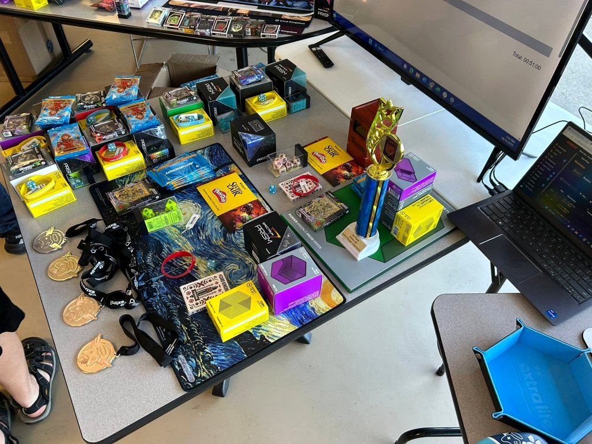
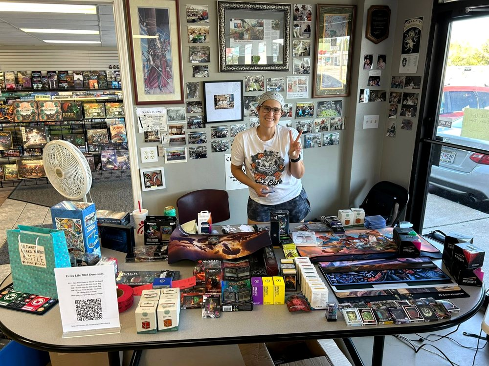
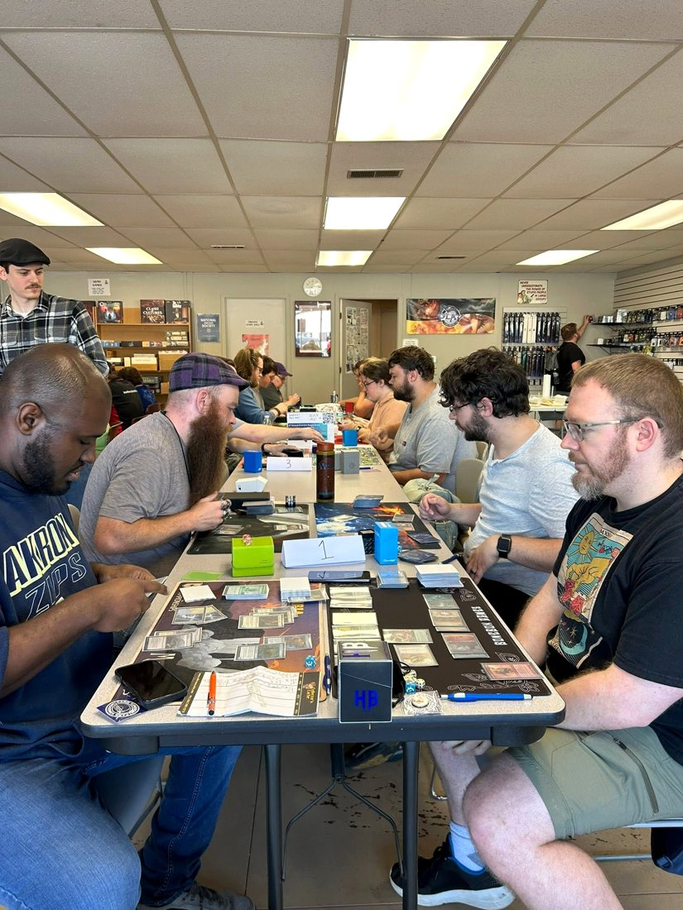
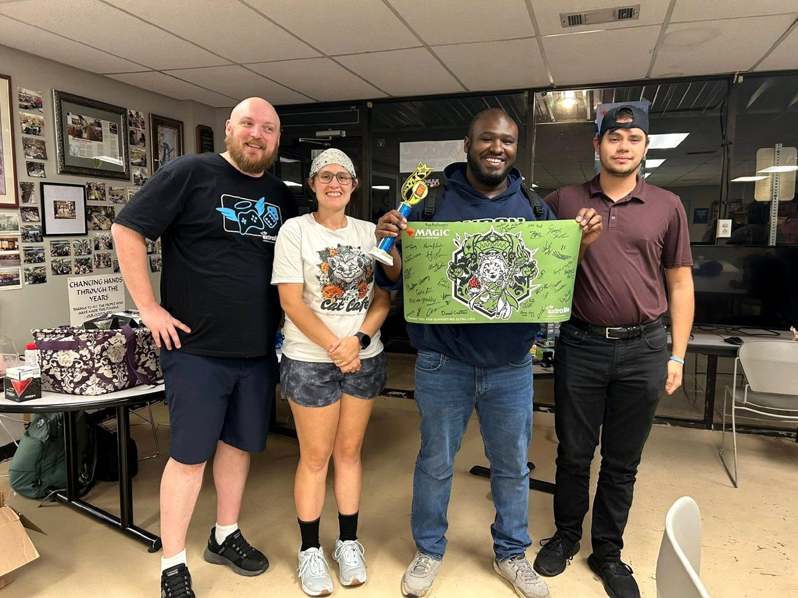

EVENT ARCHIVE
2025 Extra Life Pauper Tournament
Saturday, October 11, 2025
Thank you to our players, volunteers, donors, and supporters for making 2025 special.
2025 TOURNAMENT RESULTS
2025 Pauper Top 8
34 players competed in the second annual Extra Life Pauper event. Congratulations to champion Scotty Miller, whose Azorius Familiars deck took first place!
| Finish | Deck |
|---|---|
| 1st | Azorius Familiars |
| 2nd | Selesnya Bogles |
| Top 4 | Mono-White |
| Top 4 | Jund Wildfire |
| Top 8 | Jund Wildfire |
| Top 8 | Mono-Blue Terror |
| Top 8 | Selesnya Bogles |
| Top 8 | Gruul Monsters |




